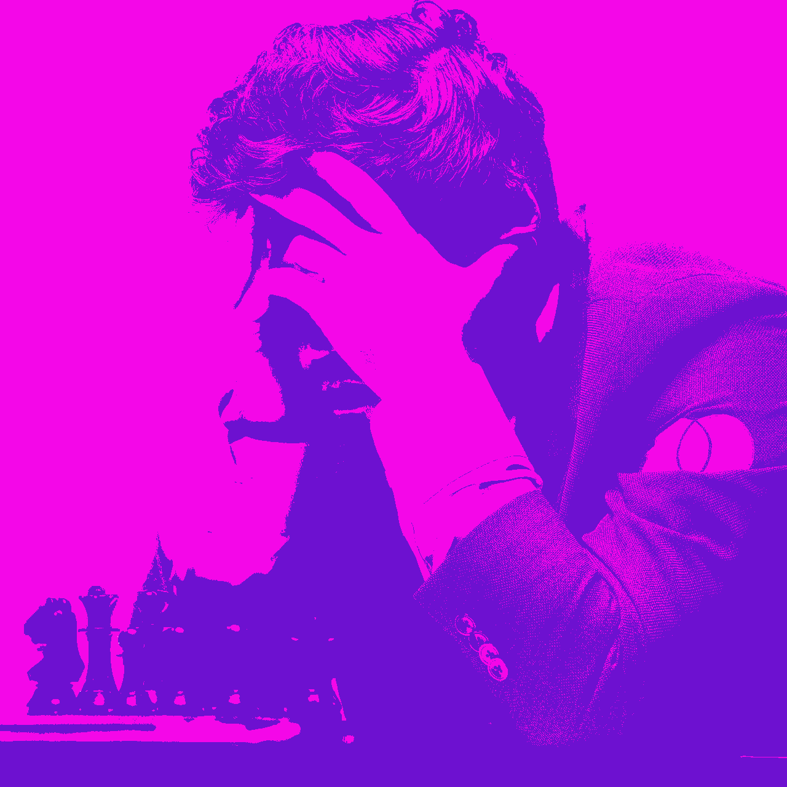
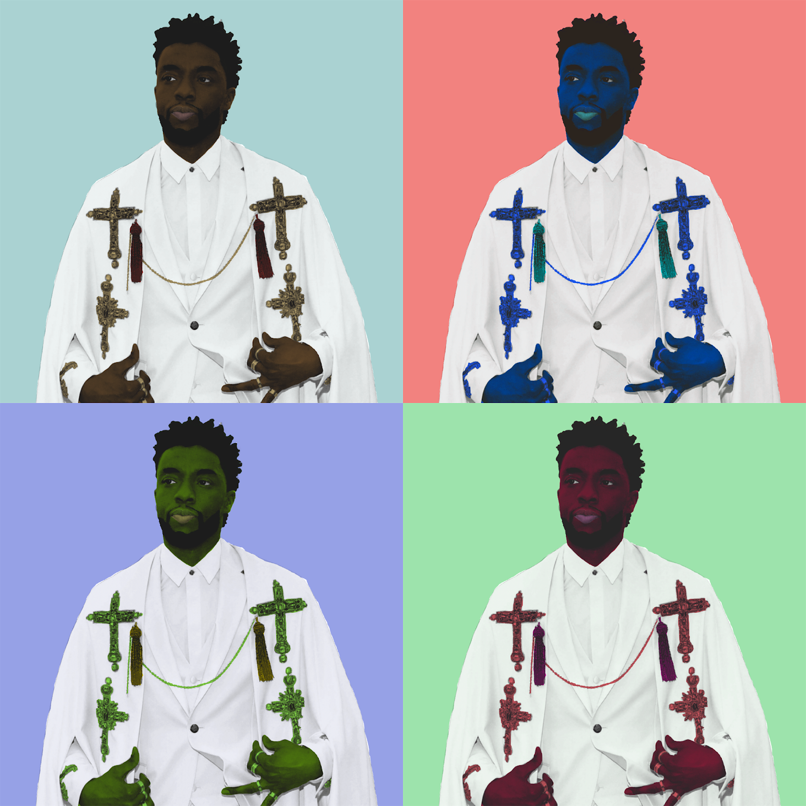
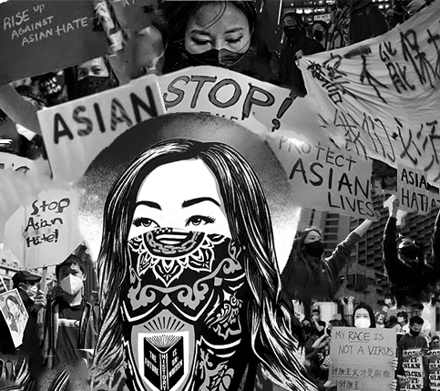

I made this project by taking a stock photo from the internet then rendering it through photoshop to achieve the finished product. I first added 3 different filters on my picture to give it a different appearance before doing the next step. The next thing i did was mirror and flip it multiple times to give the photo a completely different shape, unrecognizable from the original. After doing all these steps, my picture looked nothing like the original, transforming it into an kaleidoscop-esque artwork.
I learned to use the crop tool for the first time making this picture. After cropping him out, I had had to put it through multiple filters in order to change the color. It was difficult getting the right gradient because there was a chance it could get oversaturated or undersaturated, so I had to find the perfect adjustment in order to get him to look proper.
I changed the colors of my subjects face by separating all the colors that were used in the picture manual—which took a lot of work—then I used the threshold setting to change the gradient and contrast in colors, then I changed the colors by selecting each part of the picture and coloring it. Lastly, I duplicated the picture and justed the hue for each picture.
I used the smart selection tool the most and the adjustments settings to do all my work. I chose Chadwick Boseman because he was a very inspirational actor that everyone could look up to.
I was thinking I should combine all the apex predators of the land, sea, and skies and put them into one super alpha creature. Initially I was going to use a shark head, but the sea bass looked super scary and I wanted to make my animal scary for some reason so I chose that instead. My animal can fly because it has the wings of an eagle, capable of swooping down on any unsuspecting prey and maneuvering through the skies with confidence. It also has the fierceness and strength of a lion on land, and the head of a sea bass for the ability to breathe underwater as well. I turned my animal into a hybrid by taking the main and most useful parts of each animal and putting them together by masking over the undesired portions and then blending them in with a tool (I don’t remember which tool).
Asian hate crimes. I chose it because it’s awful to discriminate and harm others simply based on their race and it has been a growing issue within the past few years. I want the viewers to know that there’s no reason to hate on Asians and they are humans just like us. It has become more prominent due to the virus outbreak and all the blame has been aimed towards Asians. The way I assembled my photos show a collage of all the messages they want to send to everyone else: They are not the virus nor the enemy.